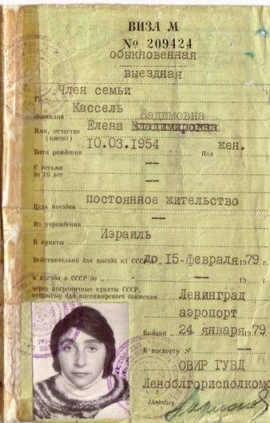

Timeframe: Late 1960s to the early 1980s (roughly 1969–1980s).
Who left: Primarily ethnic/religious minorities granted limited permission to leave—predominantly Jews, ethnic Germans, and Armenians—along with a small number of political dissidents and intellectuals.
Context: Pressured by Western trade conditions (such as the U.S. Jackson-Vanik Amendment linking trade to free emigration) and international agreements like the Helsinki Accords, the Soviet regime intermittently relaxed exit restrictions. Hundreds of thousands emigrated to Israel, the United States, and Western Europe.
